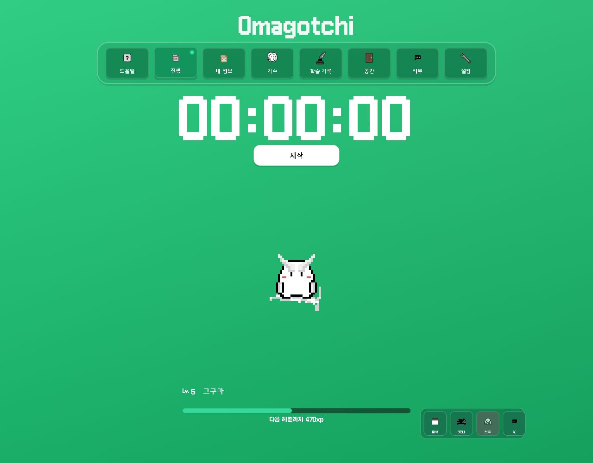

목차같은 홈, 다른 화면 크기열기닫기



같은 홈, 다른 화면 크기
데스크톱은 메뉴를 한 줄로, 모바일은 두 줄로 배치합니다. 타이머와 캐릭터, 성장 상태를 같은 순서로 유지하면서 폭에 맞춰 행동 영역을 다시 정렬했습니다. 실제 운영 사이트에서 촬영한 화면입니다.
학습의 현황과 다음 목표를 나누기
내 정보에서는 누적 학습과 캐릭터 성장을 확인하고, 진행에서는 퀘스트와 보상을 확인합니다. 현재 상태를 읽는 화면과 다음 행동을 고르는 화면을 나눠 보여줍니다. 아래는 운영 화면의 패널 영역만 잘라낸 캡처입니다.
NHN Academy 8인 팀 프로젝트. 출결과 학습 기록, 캐릭터 성장과 퀘스트를 연결하는 서비스입니다. 홈의 화면비 대응과 반복 UI의 표현 기준을 중심으로 소개합니다.
시작한 문제
메뉴·타이머·캐릭터·성장 상태가 한 화면에 모여 있어, 고정 좌표와 높이 제약이 작은 화면의 겹침과 도달 가능성 문제로 이어졌습니다.
선택한 방향
모바일 페이지를 따로 늘리는 대신 단일 홈 구조를 재검토하고, 상태 정보와 행동을 묶어 화면의 흐름 안에 배치하는 방향을 선택했습니다.
핵심 행동이 화면 크기에 가려지지 않도록
제공 화면과 문서에서 재구성한 과업 흐름 · 사용자 조사 결과가 아닙니다.
- 홈 진입
- 출석·학습 시작
- 현재 구간 저장
- 학습 기록 조회
- 퀘스트·성장 확인
- 화면 구조
- 모바일 전용 분리에서 단일 홈으로
화면별 기능 중복을 줄이고 가용 폭에 따라 정보와 행동 그룹이 흐르도록 구조를 재검토했습니다.
- 상태 표현
- 반복 UI를 공통 컴포넌트와 상태로
버튼의 외형과 로딩·비활성을 분리하고, 서버 응답 상태를 화면 표현과 연결했습니다.
- 문구
- 기록 조회와 현재 구간 저장을 구분
같은 ‘기록’으로 표현되던 행동을 구분하기 위해 ‘구간기록’ 문구를 검토했습니다.
설계할 때 먼저 생각한 것
화면이 작아져도 중요한 행동은 남아 있을까?
타이머·캐릭터·성장 정보를 한 화면에 담는 것만으로는 충분하지 않았습니다. 정보와 행동을 그룹으로 묶고, 화면 높이가 줄어도 스크롤로 필요한 기능에 도달할 수 있는지를 기준으로 구조를 재검토했습니다.
모든 기기에서 같은 한 화면을 고집하기보다, 화면 크기에 따라 배치와 스크롤을 허용하는 방향을 택했습니다.
화면을 더 만드는 대신, 구조를 다시 보기
모바일 전용 화면을 늘리면 기능과 레이아웃이 중복됩니다. 단일 홈을 기준으로 정보·행동 그룹을 재배치하고 가용 폭과 높이에 맞춰 흐르도록 구조를 재검토했습니다. 아래는 초기 시안과 기존 Storybook 자료이며, 같은 조건의 전후 비교는 아닙니다.
정보와 행동에 각자의 자리 만들기
이름·레벨·경험치는 상태 그룹으로, 반복 행동은 도크로 묶었습니다. 요소마다 다른 고정 좌표를 주는 방식에서 그룹 단위 정렬로 옮기고, 작은 화면에서도 스크롤로 핵심 행동에 도달하도록 구성했습니다.
같은 ‘기록’에도 다른 행동이 있으니까
학습 이력을 조회하는 메뉴와 현재 학습 구간을 저장하는 행동을 구분하기 위해 ‘구간기록’이라는 문구를 검토했습니다. 공통 버튼·필드·다이얼로그와 로딩·빈 값·실패 상태도 문서와 코드로 정리해, 화면 표현과 연동 계약이 이어지도록 했습니다.
진입과 기록 화면도 같은 경험으로
초기 로그인과 통계 시안입니다. 학습 전 진입과 학습 후 기록 확인을 홈의 앞뒤 과업으로 연결했습니다. 초기 시안의 정보 구조를 보여주는 자료로, 현재 배포 상태를 나타내지는 않습니다.
화면이 달라도 같은 상태를 말하도록
버튼의 역할과 동작 상태를 분리했습니다. 아래는 제공된 GameButton 코드·Story와 기능별 연결 문서를 포트폴리오용으로 정리한 표입니다.
| 구분 | 확인한 설계 | 화면에서의 역할 |
|---|---|---|
| 외형 | primary / secondary / soft / danger | 행동의 중요도와 위험 구분 |
| 처리 중 | loading → disabled, aria-busy | 중복 조작 방지와 “처리 중…” 안내 |
| 비활성 | disabled | 현재 실행할 수 없는 행동 구분 |
| 응답 상태 | loading / empty / ready / error | 대기·빈 결과·정상 결과·실패 구분 |
| 인증·권한 | unauthorized / forbidden | 로그인 필요와 권한 부족 구분 |
디자인에서 서버 연결까지
- Storybook에서 외형·상태 검토
- UI 문구 확정
- 기존 폼·화면 계약 보존
- 응답 상태 연결
- 기능 회귀 확인
협업 문서에 제시한 절차를 재구성한 도식입니다. 원본 Figma 패널이나 새로 실행한 Storybook 화면, 전 과정의 수행 검증을 뜻하지 않습니다.
캐릭터도 학습 홈의 일부로
직접 제작한 캐릭터를 타이머 아래에 배치하고 이름·레벨·경험치와 함께 성장 상태를 표현했습니다.

상태 기준을 코드로 연결한 흔적
제공된 컴포넌트 원문입니다. 처리 중 중복 조작 방지, 다이얼로그의 제목 연결과 모션 감소 대응, 필드와 홈 구성의 연결을 확인할 수 있습니다.
GameButton.jsx 원문 펼치기
import React, { forwardRef } from "react";
export const GameButton = forwardRef(function GameButton({
children,
variant = "primary",
loading = false,
className = "",
disabled,
...buttonProps
}, ref) {
const classes = ["ui-button", `ui-button--${variant}`, loading ? "is-loading" : "", className]
.filter(Boolean)
.join(" ");
return (
<button
ref={ref}
{...buttonProps}
type={buttonProps.type ?? "button"}
className={classes}
disabled={disabled || loading}
aria-busy={loading || undefined}
>
{loading ? "처리 중…" : children}
</button>
);
});
GameButton.stories.jsx 원문 펼치기
import React from "react";
import { GameButton } from "./GameButton.jsx";
const meta = {
title: "UI/Button",
component: GameButton,
decorators: [(Story) => <div className="ui-story-canvas"><Story /></div>],
args: { children: "학습 시작", variant: "primary", loading: false, disabled: false },
argTypes: {
variant: { control: "select", options: ["primary", "secondary", "soft", "danger"] },
children: { control: "text" }
},
parameters: { layout: "fullscreen" }
};
export default meta;
export const Primary = {};
export const Secondary = { args: { variant: "secondary", children: "다음에 하기" } };
export const Soft = { args: { variant: "soft", children: "도움말 보기" } };
export const Loading = { args: { loading: true } };
export const Disabled = { args: { disabled: true } };
GameDialog.jsx 원문 펼치기
import React, { useState } from "react";
import { AnimatePresence, motion, useReducedMotion } from "motion/react";
import { Dialog } from "radix-ui";
const visuallyHiddenStyle = {
position: "absolute",
width: 1,
height: 1,
padding: 0,
overflow: "hidden",
clipPath: "inset(50%)",
whiteSpace: "nowrap",
border: 0
};
export function GameDialog({
trigger,
title,
description,
children,
open,
defaultOpen = false,
onOpenChange,
portalled = true,
contentClassName = ""
}) {
const [internalOpen, setInternalOpen] = useState(defaultOpen);
const reducedMotion = useReducedMotion();
const controlled = open !== undefined;
const resolvedOpen = controlled ? open : internalOpen;
const handleOpenChange = (nextOpen) => {
if (!controlled) {
setInternalOpen(nextOpen);
}
onOpenChange?.(nextOpen);
};
const transition = reducedMotion ? { duration: 0 } : { duration: 0.16, ease: "easeOut" };
const dialogLayer = (
<AnimatePresence>
{resolvedOpen ? (
<>
<Dialog.Overlay asChild forceMount>
<motion.div
className="ui-dialog-overlay"
initial={reducedMotion ? false : { opacity: 0 }}
animate={{ opacity: 1 }}
exit={{ opacity: 0 }}
transition={transition}
/>
</Dialog.Overlay>
<Dialog.Content asChild forceMount aria-describedby={description ? undefined : null}>
<motion.section
className={`ui-dialog-content ${contentClassName}`.trim()}
initial={reducedMotion ? false : { opacity: 0, y: 18, scale: 0.985 }}
animate={{ opacity: 1, y: 0, scale: 1 }}
exit={{ opacity: 0, y: 12, scale: 0.99 }}
transition={transition}
>
<Dialog.Title className="ui-sr-only" style={visuallyHiddenStyle}>{title}</Dialog.Title>
{description ? (
<Dialog.Description className="ui-sr-only" style={visuallyHiddenStyle}>{description}</Dialog.Description>
) : null}
{children}
</motion.section>
</Dialog.Content>
</>
) : null}
</AnimatePresence>
);
return (
<Dialog.Root open={resolvedOpen} onOpenChange={handleOpenChange}>
{trigger ? <Dialog.Trigger asChild>{trigger}</Dialog.Trigger> : null}
{portalled ? <Dialog.Portal forceMount>{dialogLayer}</Dialog.Portal> : dialogLayer}
</Dialog.Root>
);
}
export function GameDialogClose({ children }) {
return <Dialog.Close asChild>{children}</Dialog.Close>;
}
GameField.jsx 원문 펼치기
import React, { useId } from "react";
export function GameField({ label, hint, error, id, className = "", ...inputProps }) {
const generatedId = useId();
const inputId = id || generatedId;
const messageId = `${inputId}-message`;
return (
<label className={["ui-field", className].filter(Boolean).join(" ")} htmlFor={inputId}>
<span className="ui-field__label">{label}</span>
<input
{...inputProps}
id={inputId}
aria-invalid={Boolean(error)}
aria-describedby={hint || error ? messageId : undefined}
/>
{error ? <span id={messageId} className="ui-field__error">{error}</span> : null}
{!error && hint ? <span id={messageId} className="ui-field__hint">{hint}</span> : null}
</label>
);
}
CharacterStage.jsx 원문 펼치기
import React from "react";
export function CharacterStage({
characterSrc = "/images/characters/default/omagotchi.png",
characterAlt = "오마고치 캐릭터",
interactionLabel = "오마고치와 놀아주기",
wingSrc = "",
message = "",
levelUp = false
}) {
return (
<section className="companion-panel" aria-label="캐릭터 상태">
<div className={`home-character-stage${levelUp ? " is-level-up" : ""}`} data-character-stage>
<img
className="home-character-wing"
data-character-wing
src={wingSrc || undefined}
alt=""
aria-hidden="true"
hidden={!wingSrc}
/>
<div className="home-character-anchor">
<p className="character-speech-bubble" data-character-bubble aria-live="polite" hidden={!message}>
{message}
</p>
<button className="home-character-button" type="button" data-character-interaction aria-label={interactionLabel}>
<img className={`home-character${levelUp ? " is-level-up" : ""}`} data-home-character src={characterSrc} alt={characterAlt} />
</button>
</div>
</div>
</section>
);
}
추가 담당 영역
레벨 디자인, 사용자·기수(cohort) 관리 영역도 함께 담당했습니다. 캐릭터를 직접 제작했으며 해당 캐릭터의 저작권을 보유합니다.
협업과 조율
NHN Academy 8인 팀 프로젝트
프론트엔드 전반을 맡으면서, 화면을 만드는 일과 다른 담당자가 기능을 연결할 수 있도록 기준을 남기는 일을 함께 다뤘습니다.
화면 표현과 기능 연결의 경계 정리
공통 UI를 적용하면서 기존 로그인 폼·필드와 화면 제어 규칙을 유지했습니다. 기능별 연결 지도에는 담당 영역, 보존할 화면 계약, 필요한 응답과 미연결 항목을 정리해 백엔드가 어디를 연결해야 하는지 확인할 수 있도록 했습니다.
완료 기준이 다른 부분을 조율 항목으로 남기기
AI 추천 퀘스트는 화면에 표시돼도 완료 처리 호출이 연결되지 않은 상태였습니다. 인계서에서는 연결할 지점과 함께, 대화 1회·추천 행동 수행·세션 종료 중 무엇을 완료로 볼지 결정할 항목으로 남겼습니다. 화면 표시와 실제 보상 흐름을 구분해 논의할 수 있도록 한 사례입니다.
협업에서는 완성된 화면뿐 아니라, 다른 담당자가 이어서 작업할 수 있는 상태·연결 지점·남은 결정을 함께 전달하는 것이 중요하다고 생각했습니다.
당시 연결 지도와 인계서 기준입니다. 완료 조건의 최종 합의나 연동 완료를 뜻하지 않습니다.
만든 결과와 남은 질문
만든 결과
단일 홈의 반응형 구조, 정보·행동 그룹, 공통 UI 상태와 개발 인계 계약을 정리했습니다. 상태별 기준은 아래 코드 기반 정리와 원문 문서에서 확인할 수 있습니다.
다음에 확인할 것
세로·가로·작은 높이에서 핵심 행동의 도달 가능성과, 기록 조회·구간 저장의 문구 이해도를 검증할 필요가 있습니다.
검증 범위와 자료 기준
운영 화면은 2026.11.15 omagotchi.site에서 촬영했습니다. 학습 시간이나 퀘스트 상태는 촬영 시점 계정의 실제 표시값이며 서비스 성과 지표가 아닙니다. 프로토타입과 Storybook 캡처는 최종 배포 화면 또는 동일 조건의 전후 비교가 아닙니다. 공통 UI 상태는 코드·문서 근거로 설명하며 전체 서버 연동이나 기기별 사용성 검증을 뜻하지 않습니다. 캐릭터 제작 과정의 원본 작업 파일과 성장 단계별 시트는 제공 자료에 없어 새로 만들지 않았습니다.
2026년 11월 15일 수집 자료 기준입니다. 담당 역할은 본인 설명을 반영했으며, 팀 산출물 전체를 개인 기여로 해석하지 않습니다.
화면과 문서, 근거 전체 보기
제공된 화면 11개와 관련 문서 32개입니다. 핵심 사례 외의 화면·중간안·검토 기록도 구분해 열어볼 수 있습니다.
선별한 운영 화면 / 2026.11.154개
초기 시안·컴포넌트 기록7개
설계·구현·회고 문서32개
- 설계 결정: React 게임 UI 도구의 단계적 도입
- 설계 결정: CSS 라이브러리 추가 도입 검토 폐기
- Home React·Storybook 구조 가이드
- 공통 UI 디자인 시스템·Storybook 가이드
- AI 도우미 메신저 레이아웃·모델 선택 리팩토링 기록
- Home 하단 HUD 반응형 리팩토링 기록, 프론트엔드 문서
- Home UI React Island 리팩토링 기록
- 홈 반응형 레이아웃 리팩터링 기록, 프론트엔드 문서
- Home UI 전환 검토 기록
- 백엔드 연동 전 UI 통합 리팩토링 기록
- Storybook 공통 UI·화면 Pattern 리팩토링 기록, 프론트엔드 문서
- Figma Prototype
- UI/UX 리빌딩 기록
- 홈 화면 단일 뷰 리뉴얼
- Home UI의 화면 비율 대응 한계와 React Island 도입 배경
- 타이머 동일 버튼 역할 분리
- 타이머 역할 분리에 대한 고민
- Home 하단 HUD 반응형 리팩토링 기록, 개인 작업 기록
- 홈 반응형 레이아웃 리팩터링 기록, 개인 작업 기록
- Storybook 공통 UI·화면 Pattern 리팩토링 기록, 개인 작업 기록
- UI/UX 설계 근거와 개선 이력
- 프론트엔드 작업 회고 및 코드 품질 평가
- 관리자 대시보드 패널 작성 가이드
- AI 추천 퀘스트 완료 연동 인계서
- Frontend ↔ Backend 기능별 연결 지도
- Gateway Presence 통합 검증 인계서 (2026-08-24)
- Frontend Implementation Spec
- 팀명: Omagotchi
- 요구사항 관리
- MVP 및 구현 일정 로드맵
- 설계 결정: Home UI - 모바일 전용 경로와 Viewport Redirect 폐기
- 설계 결정: Home UI - React Island 기반 유동형 웹앱 스테이지 도입
수집용 중복 목록·개인 기여 검토표·로컬 경로와 원시 성능 JSON은 제외했습니다. 원문 속 로컬 경로·이메일은 생략했으며, 당시 테스트 보고와 계획은 작성 시점의 기록으로 보존했습니다.